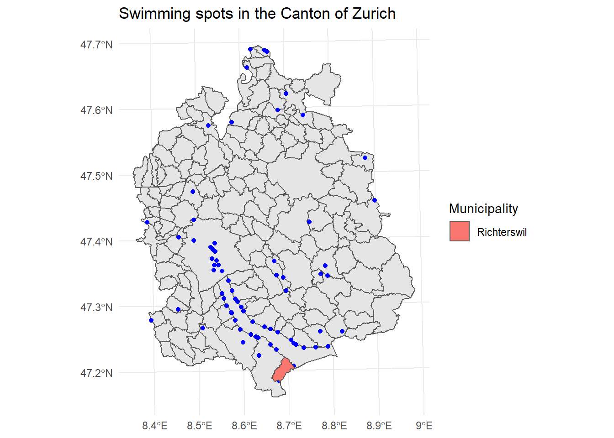
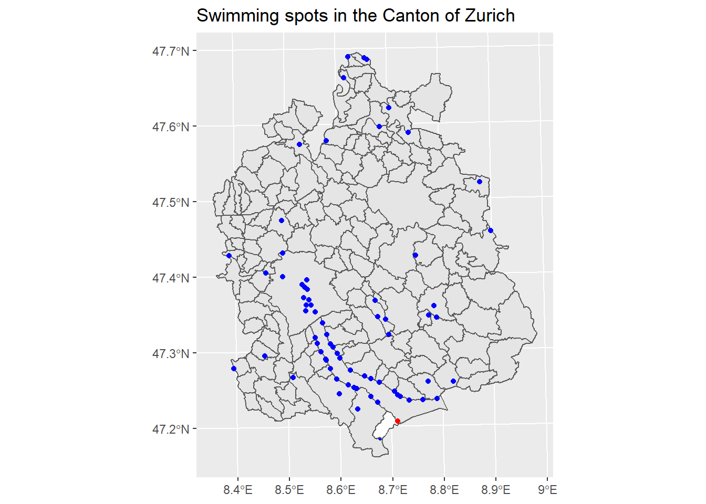

5.2 Select by Location
One of the most commonly used operations in ArcGIS pro is the process of selecting features of a spatial object (layer) based on whether or not these relate spatially to another object (layer). This process is also referred as spatial subsetting. In ArcGIS pro this can be performed in various ways using the Select by Location tool.
In R the same operation is, on a first level, performed using the square bracket ([]) operator from the base R package.
An example of spatial subsetting could be the following. Let’s assume we have as a shapefile (polygon dataframe) with all the municipalities (Gemeinde) of the Canton of Zurich. Furthermore, we are also using a shapefile in the form of a point dataframe, which represents all the “swimming spots” (Badenplätze) in the same spatial region (Canton of Zurich). So, ultimately, our goal is to find out the “swimming spots” that lie within a specific municipality of the Canton of Zurich.
# Minicipalities (Gemeinde) in Canton Zurich
gemeinde_ZH <- st_read("sample_data/Kanton_Zuerich/Gemeinde_ZH.shp")## Reading layer `Gemeinde_ZH' from data source `C:\Users\bako\Desktop\Projekte\All_thing_R_Spatial\github\spatialR_for_ArcGIS_Users\sample_data\Kanton_Zuerich\Gemeinde_ZH.shp' using driver `ESRI Shapefile'
## Simple feature collection with 166 features and 7 fields
## geometry type: MULTIPOLYGON
## dimension: XY
## bbox: xmin: 2669245 ymin: 1223896 xmax: 2716900 ymax: 1283343
## projected CRS: CH1903+ / LV95# "Swimming" spots in the Canton of Zurich
swimmSpots <- st_read("sample_data/Kanton_Zuerich/Badeplaetze_ZH.shp")## Reading layer `Badeplaetze_ZH' from data source `C:\Users\bako\Desktop\Projekte\All_thing_R_Spatial\github\spatialR_for_ArcGIS_Users\sample_data\Kanton_Zuerich\Badeplaetze_ZH.shp' using driver `ESRI Shapefile'
## Simple feature collection with 71 features and 6 fields
## geometry type: POINT
## dimension: XY
## bbox: xmin: 2671636 ymin: 1226720 xmax: 2710101 ymax: 1282760
## projected CRS: CH1903+ / LV95
After importing and depicting the “swimming spots” throughout the canton of Zurich, let’s assume we want to check if and how many of them lie within the Municipality of Richterswil. To do so, we will perform an operation, which belongs to the category of Spatial subsetting.

The operation above is based on the following rule: x[y, ,operation], where:
- x and y are the spatial objects for which we want to investigate if there is a spatial relationship (x is the target feature, while y is the source one)
- the second argument [, ,] within the brackets denotes the column number we want to retrieve from the spatial subsetting. In our example this argument was empty, which means we wanted to retrieve all rows for every attribute column.
- the third argument [op = ] specifies the spatial operation we want to perform. In the example above, the goal was to find out how many subset features of the target object swimmSpots lie withing the source spatial object richterswil. For that reason we chose the function st_within().
Depending on what we want to examine, we choose the respective function.